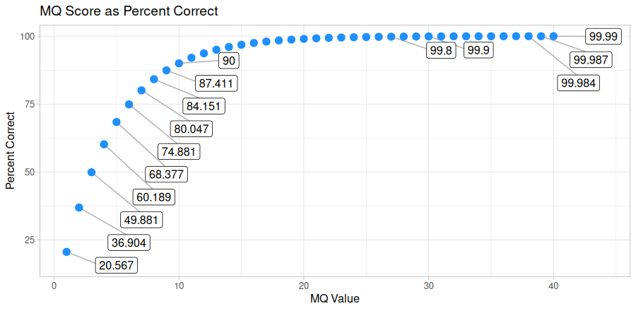

align without linked-read information
The process and commands for using minibwa, strobealign, and minimap2 are identical and consolidated here.
- at least 4 cores/threads available
- a genome assembly in FASTA format: .fasta .fa .fasta.gz .fa.gz case insensitive
- paired-end fastq sequence files
❤️
gzipped recommended
- sample name: a-z 0-9 . _ - case insensitive
- forward: _F .F .1 _1 _R1_001 .R1_001 _R1 .R1
- reverse: _R .R .2 _2 _R2_001 .R2_001 _R2 .R2
- fastq extension: .fq .fastq case insensitive
Once sequences have been trimmed and passed through other QC filters, they will need to be aligned to a reference genome. This module within Harpy expects filtered reads as input, such as those derived using harpy qc . You can map reads onto a genome assembly with Harpy using the align bwa module:
harpy align bwa|stobe|minimap OPTIONS... REFERENCE INPUTS...harpy align bwa genome.fasta Sequences/ Running Options
In addition to the common runtime options , the align bwa / align strobe modules are configured using these command-line arguments:
Technology
This option is specific to align minimap and ignored otherwise. It configures the aligner for specific data types, where:
Output format
Regardless of the input linked-read format, the align workflows will standardize the output alignment records
such that the barcode is contained in the BX:Z tag and barcode validation is in the VX:i tag.
Molecule distance
The --molecule-distance option is used during the alignment workflow
to deconvolute alignments with the same barcode that might not have originated
from the same DNA molecule based on the distance threshold
you specify. This happens during the linked-read stats step to internally split molecules based on this value, but
it doesn't modify the barcodes in the output. Set this value to 0 to skip distance-based deconvolution during the
this reporting step. Ignored if using --skip-reports.
Quality filtering
The --min-quality argument filters out alignments below a given MQ threshold. The default, 30, keeps alignments
that are at least 99.9% likely correctly mapped. Set this value to 1 if you only want alignments removed with
MQ = 0 (0% likely correct). You may also set it to 0 to keep all alignments for diagnostic purposes.
The plot below shows the relationship between MQ score and the likelihood the alignment is correct and will serve to help you decide
on a value you may want to use. It is common to remove alignments with MQ <30 (<99.9% chance correct) or MQ <40 (<99.99% chance correct).
Every alignment in a BAM file has an associated mapping quality score (MQ) that informs you of the likelihood that the alignment is accurate. This score can range from 0-40, where higher numbers mean the alignment is more likely correct. The math governing the MQ score actually calculates the percent chance the alignment is incorrect:
\%\ chance\ incorrect = 10^\frac{-MQ}{10} \times 100\\
\text{where }0\le MQ\le 40You can simply subtract it from 100 to determine the percent chance the alignment is correct:
\%\ chance\ correct = 100 - \%\ chance\ incorrect\\
\text{or} \\
\%\ chance\ correct = (1 - 10^\frac{-MQ}{10}) \times 100
Marking PCR duplicates
Harpy uses samtools markdup to mark putative PCR duplicates by using both the BX tag
as a UMI (unique molecule identified) for more accurate duplicate detection. The read name
is also parsed to determine if the sequencing platform was HiSeq/NovaSeq to distinguish between
PCR and optical duplicates. Duplicate marking also uses the -S option to mark supplementary (chimeric)
alignments as duplicates if the primary alignment was marked as a duplicate. Duplicates get marked but are not removed.
Workflows
Regardless of which aligner you choose, the workflows are mostly identical:
graph LR
A([index genome]):::clean --> B([align to genome]):::clean
B-->C([sort alignments]):::clean
C-->XX([standardize barcodes]):::clean
XX-->D([mark duplicates]):::clean
D-->E([assign molecules]):::clean
E-->F([alignment metrics]):::clean
D-->G([barcode stats]):::clean
G-->F
subgraph aln [Inputs]
Z[FASTQ files]:::clean---genome[genome]:::clean
end
aln-->B & A
subgraph markdp [mark duplicates via `samtools`]
direction LR
collate:::clean-->fixmate:::clean
fixmate-->sort:::clean
sort-->markdup:::clean
end
style markdp fill:#f0f0f0,stroke:#e8e8e8,stroke-width:2px,rx:10px,ry:10px
style aln fill:#f0f0f0,stroke:#e8e8e8,stroke-width:2px,rx:10px,ry:10px
classDef clean fill:#f5f6f9,stroke:#b7c9ef,stroke-width:2pxThe default output directory is Align/{aligner} with the folder structure below.
Sample1 is a generic sample name for demonstration purposes. The resulting folder also includes a workflow directory
(not shown) with workflow-relevant runtime files and information.
Align/{aligner}
├── Sample1.bam
├── Sample1.bam.bai
├── logs
│ ├── sample1.arachne.log
│ ├── sample1.markdup.log
│ │── sample1.sort.log
└── reports
├── barcodes.summary.ipynb
├── {aligner}.stats.ipynb
├── Sample1.ipynb
└── data
├── lrstats
│ └── Sample1.lrstats.gz
└── coverage
├── Sample1.molcov.gz
└── Sample1.cov.gz- ignores barcode information (but retains in output)
- fast and accurate
The minibwa workflow maps all reads against the reference genome. Duplicates are marked using samtools markdup.
The BX:Z tags in the read headers are still added to the alignment headers, even though barcodes
are not used to inform mapping. The -m threshold is used for calculating statistics.
By default, Harpy runs minibwa with these parameters (excluding inputs and outputs):
minibwa map -y -x sr -R "@RG\tID:samplename\tSM:samplename"Below is a list of all minibwa map command line arguments, excluding those Harpy already uses or those made redundant by Harpy's implementation of BWA.
- ignores barcode information (but retains in output)
- ultra-fast
- as-good-or-better accuracy to BWA MEM for sequences greater than 100bp
- accuracy may be lower for sequences shorter than 100bp
The strobealign workflow is nearly identical to the BWA workflow,
the only real difference being how the input genome is indexed and that alignment is performed with
strobealign instead of BWA. Duplicates are marked using samtools markdup.
The BX:Z tags in the read headers are still added to the alignment headers, even though barcodes
are not used to inform mapping. The -m threshold is used for alignment molecule assignment.
By default, Harpy runs strobealign with these parameters (excluding inputs and outputs):
strobealign [--use-index -r ...] -t THREADS -U -C --rg-id={sample} --rg=SM:{sample}Below is a list of all strobealign command line arguments, excluding those Harpy already uses or those made redundant by Harpy's implementation of it.
- ignores barcode information (but retains in output)
- ultra-fast
- highly tuned for long-read data
Minimap2 is a versatile sequence alignment program that aligns DNA or mRNA sequences against a large reference database.
For ~10kb noisy reads sequences, minimap2 is tens of times faster than mainstream long-read mappers such as BLASR, BWA-MEM, NGMLR and GMAP.
The BX:Z tags in the read headers are still added to the alignment headers, even though barcodes
are not used to inform mapping. The -m threshold is used for alignment molecule assignment.
By default, Harpy runs minimap2 with these parameters (excluding inputs and outputs):
minimap2 -t {threads} -a --MD -y -x map-{technology} -R "@RG\tID:samplename\tSM:samplename"Below is a list of all minimap2 command line arguments, excluding those Harpy already uses or those made redundant by Harpy's implementation of it.
Values in [brackets] are the software's default.